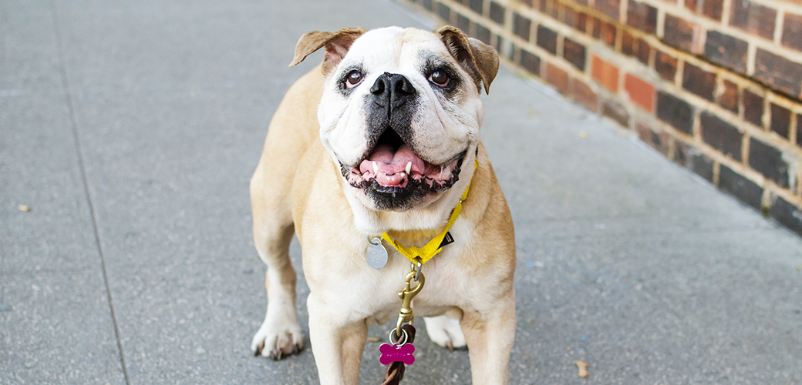

How to Take Care of Your Dog
A dog can be a wonderful addition to any home, but whether you're an experienced pet parent or a first-time adopter, it's important to keep your canine companion's health and happiness a top priority. Below are some useful tips for all dog parents.

Feeding
- Puppies eight to 12 weeks old need four meals a day.
- Feed puppies three to six moths old three meals a day.
- Feed puppies six months to one year two meals a day.
- When dogs reach their first birthday, a meal a day should be enough.
- For some dogs like larger canines or those prone to bloat, two samll meals are better than one big meal.
Exercise
Dogs need exercise to burn calories, stimulate their minds, and stay healthy. Individual exercise needs vary based on breed or breed mix, sex, age and level of health. Exercise also tends to help dogs avoid boredom, which can lead to destructive behaviors. Supervised fun and games will satisfy many of your pet's instinctual urges to dig, herd, chew, retrieve and chase.
Fleas and Ticks
Daily inspections of your dog for fleas and ticks during the warm seasons are important. Use a flea comb to find and remove fleas. There are several new methods of flea and tick control. Speak to your veterinarian about these and other options.
Dog Supply Checklist
- Dog food and treats
- Food dish
- water bowl
- Toys (including safe chew toys)
- Brush & comb (including flea comb)
- Collar and ID tag
- Dog bed
Source: “General Dog Care.” ASPCA, 2015, www.aspca.org/pet-care/dog-care/general-dog-care.